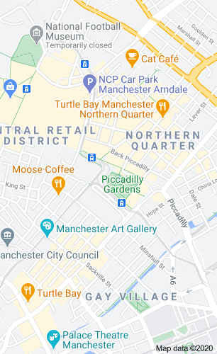

This is the exicting events that is happening around Manchester hope you enjoy in this website you will find events which you and your family can enjoy and hopefully come in the near future.Manchester city centre is jam-packed with unique and eclectic restaurants, bars, shops, museums, galleries, hotels and places to stay whilst the surrounding Greater Manchester boroughs offer a patch-work of visitor experiences including quaint market towns, traditional pubs and beautiful green spaces and waterways to be explored on foot or bike. The city region is easily navigated, with great transport links both in and around Greater Manchester

if you want to travel by Train
There are three main stations in the city centre: Piccadilly, Oxford Road and Victoria. With direct rail services from across the country, getting here is easy. Operators include: TransPennine Express, CrossCountry Trains, Great Western Railway and Northern Rail.